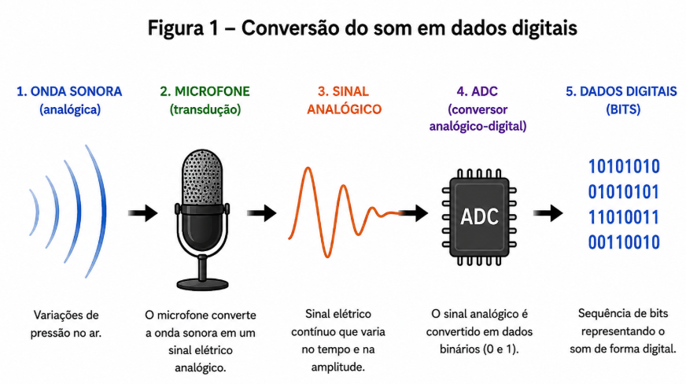
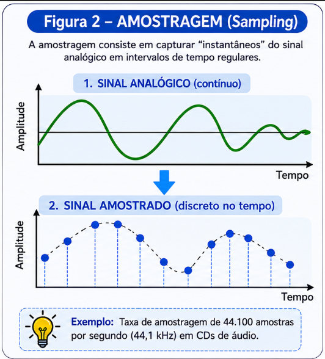
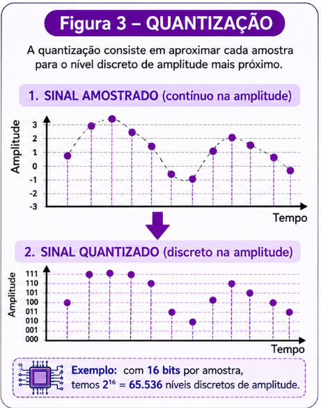
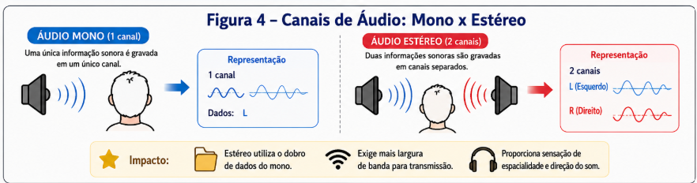

1. Introdução
-
0
Objetivos principais da BNCC
Visualização
A transformação de uma onda mecânica contínua em sinal digital discreto.
Conversão Analógico-Digital
-
0
Processos essenciais

PRÓXIMO PASSO
Pronto para ver isso na prática? Vamos lá!
Vamos entender as fases da digitalização, os canais e formatos de áudio utilizados todos os dias.
- Amostragem: Discretização no eixo do tempo.
- Quantização: Discretização no eixo da amplitude.
- Canais: A diferença entre Mono e Estéreo.
Avançar
Conceitos fundamentais da Computação
Visualização
Onda contínua fatiada no tempo (Sampling).

Visualização
Níveis de amplitude mapeados para valores binários discretos.

Visualização
Um arquivo estéreo armazena o dobro de dados em comparação ao mono.
Comparativo de Formatos de Áudio
| Formato | Tamanho | Compressão |
|---|---|---|
| WAV | Grande (~5 MB) | Sem Compressão |
| FLAC | Médio (~2.5 MB) | Sem Perdas |
* Dados atualizados em 2026

Visualização
Captação -> Condicionamento -> Conversão ADC -> Armazenamento.
Proposta 1: Experiência Desplugada
-
0
1º ao 3º ano
Proposta 2: Experiência Plugada
-
0
9º ano